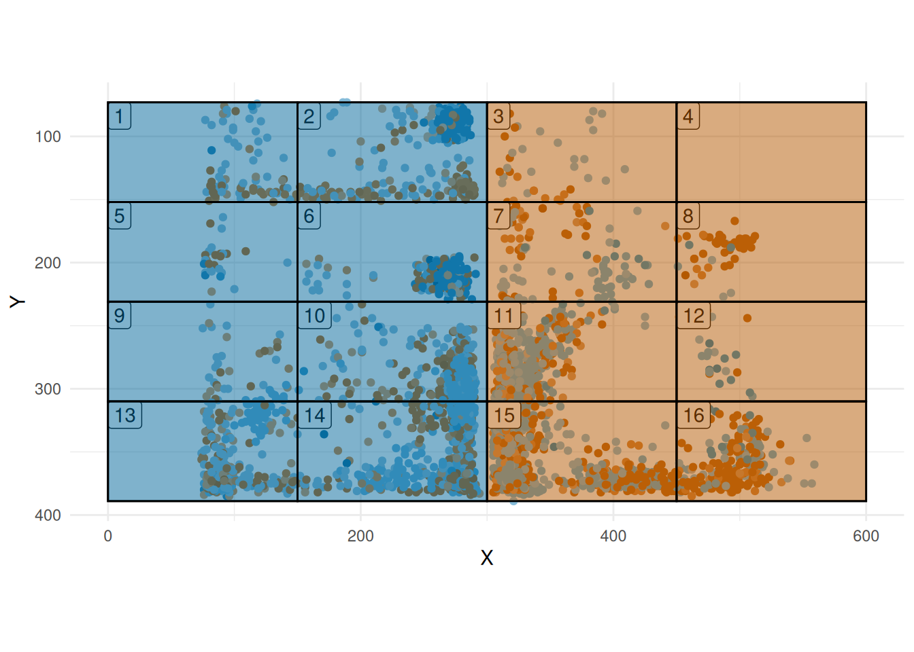
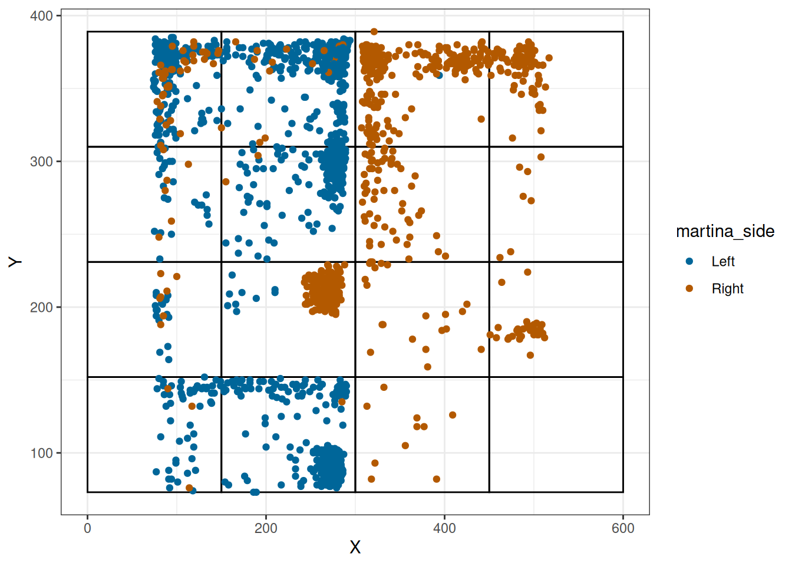
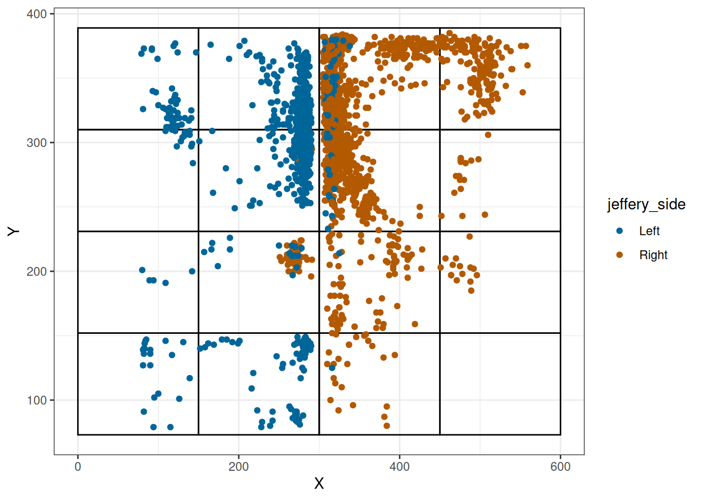
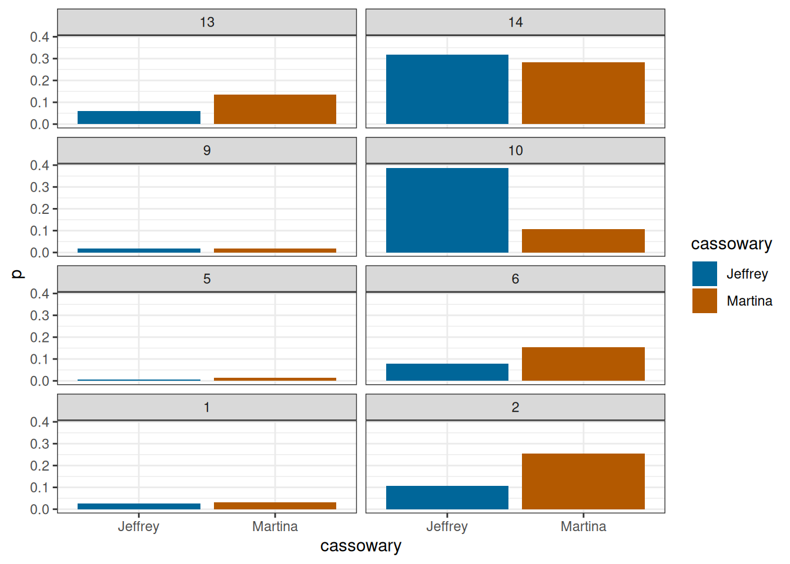
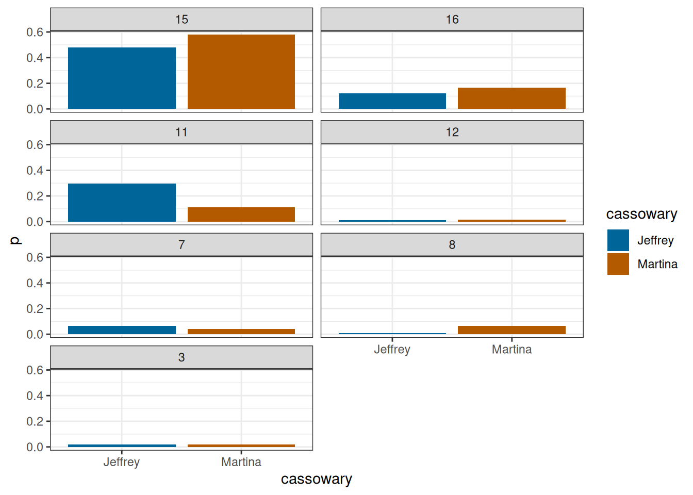
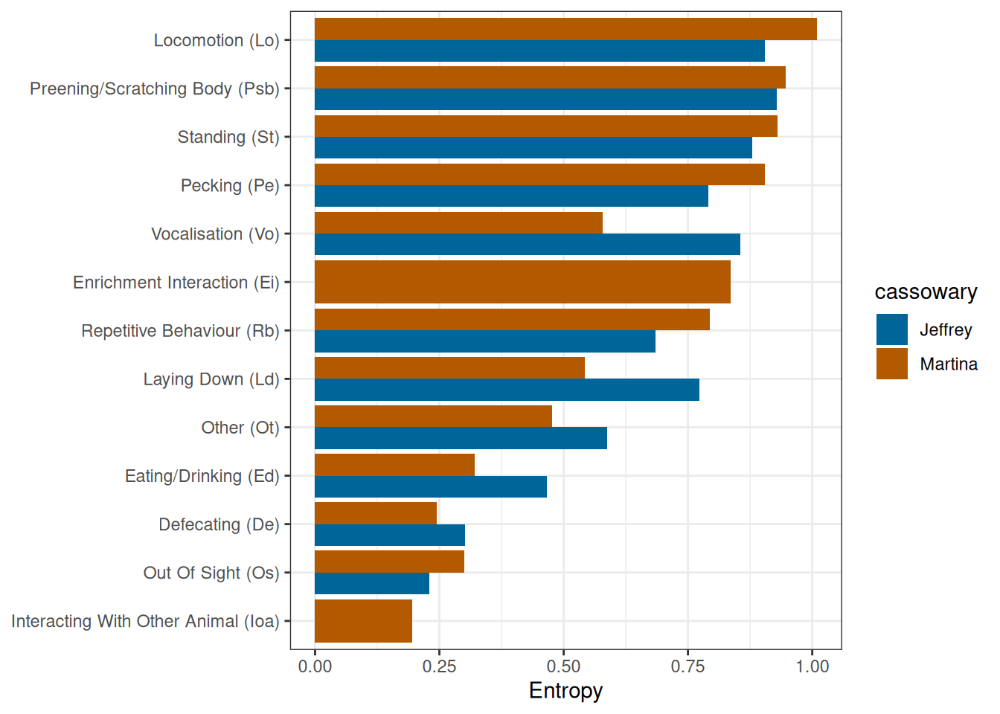

pacman::p_load(tidyverse, gt, monitoR)
theme_set(theme_bw())Load data
data(cassowary)
cassowary |> glimpse()
#> Rows: 4,350
#> Columns: 7
#> $ time <dttm> 2023-09-08 15:02:58, 2023-09-08 15:02:58, 2023-09-08 15:…
#> $ X <dbl> 285, 322, 282, 322, 283, 277, 279, 267, 273, 316, 277, 36…
#> $ Y <dbl> 329, 366, 330, 227, 306, 215, 324, 212, 342, 264, 353, 25…
#> $ behaviour <chr> "Laying Down (Ld)", "Repetitive Behaviour (Rb)", "Laying …
#> $ cassowary <chr> "Jeffrey", "Martina", "Jeffrey", "Martina", "Jeffrey", "M…
#> $ jeffery_side <chr> "Left", "Left", "Left", "Left", "Left", "Left", "Left", "…
#> $ martina_side <chr> "Right", "Right", "Right", "Right", "Right", "Right", "Ri…Adding the grid
We add a 4x4 grid - decide to make a bit nicer than the default grid. Note that there are two zones denotes left and right (Figure 1).
grid <- create_grid(
range(cassowary$X),
range(cassowary$Y),
dim = c(4, 4)
)
grid <- grid |>
mutate(
left = case_when(
left == 74 ~ 0,
left == 195.25 ~ 150,
left == 316.5 ~ 300,
left == 437.75 ~ 450,
TRUE ~ left
),
right = case_when(
right == 74 ~ 0,
right == 195.25 ~ 150,
right == 316.5 ~ 300,
right == 437.75 ~ 450,
right == 559 ~ 600,
TRUE ~ right
)
)
grid$zone <- "right"
grid$zone[c(1, 2, 5, 6, 9, 10, 13, 14)] <- "left"
cassowary_grid <- cassowary |> add_grid(grid)
plot_grid(grid, cassowary_grid, zone_fill = TRUE) +
theme(legend.position = "none")

Cassowary side
We have two cassowaries - Martina and Jeffrey. They are let out into on of the sides. We have information about which side they are in.
martina <- cassowary_grid |>
filter(cassowary == "Martina")
jeffrey <- cassowary_grid |>
filter(cassowary == "Jeffrey")
jeffrey
#> # A tibble: 2,174 × 9
#> time X Y behaviour cassowary jeffery_side martina_side
#> <dttm> <dbl> <dbl> <chr> <chr> <chr> <chr>
#> 1 2023-09-08 15:02:58 285 329 Laying D… Jeffrey Left Right
#> 2 2023-09-08 15:03:58 282 330 Laying D… Jeffrey Left Right
#> 3 2023-09-08 15:04:58 283 306 Laying D… Jeffrey Left Right
#> 4 2023-09-08 15:05:58 279 324 Laying D… Jeffrey Left Right
#> 5 2023-09-08 15:06:58 273 342 Laying D… Jeffrey Left Right
#> 6 2023-09-08 15:07:58 277 353 Laying D… Jeffrey Left Right
#> 7 2023-09-08 15:08:58 287 352 Laying D… Jeffrey Left Right
#> 8 2023-09-08 15:09:58 282 369 Laying D… Jeffrey Left Right
#> 9 2023-09-08 15:10:58 284 370 Laying D… Jeffrey Left Right
#> 10 2023-09-08 15:11:58 166 217 Locomoti… Jeffrey Left Right
#> # ℹ 2,164 more rows
#> # ℹ 2 more variables: grid <dbl>, zone <chr>Figure 2 gives the positions for Martina and also the side that she is recorded on, while Figure 3 gives the equivalent for Jeffrey.
Note
Need to discuss with EF.
grid |>
ggplot2::ggplot() +
ggplot2::geom_rect(
ggplot2::aes(xmin = left, xmax = right, ymin = bottom, ymax = top),
col = "black",
alpha = 0.1,
fill = NA
) +
ggplot2::geom_point(
ggplot2::aes(X, Y, col = martina_side),
data = martina
) +
harrypotter::scale_colour_hp_d("Ravenclaw")

grid |>
ggplot2::ggplot() +
ggplot2::geom_rect(
ggplot2::aes(xmin = left, xmax = right, ymin = bottom, ymax = top),
col = "black",
alpha = 0.1,
fill = NA
) +
ggplot2::geom_point(
ggplot2::aes(X, Y, col = jeffery_side),
data = jeffrey
) +
harrypotter::scale_colour_hp_d("Ravenclaw")

Figure 4 gives the proportion of time that each cassowary is in each grid for the left side.
cassowary_grid |>
filter(zone == "left") |>
count(grid, cassowary) |>
mutate(
N = sum(n),
.by = cassowary,
) |>
mutate(
p = n / N,
grid = factor(
grid,
levels = c(13, 14, 15, 16, 9, 10, 11, 12, 5, 6, 7, 8, 1, 2, 3, 4)
)
) |>
ggplot(aes(cassowary, p, fill = cassowary)) +
geom_col() +
facet_wrap(~grid, ncol = 2) +
harrypotter::scale_fill_hp_d("Ravenclaw")

cassowary_grid |>
filter(zone == "right") |>
count(grid, cassowary) |>
mutate(
N = sum(n),
.by = cassowary,
) |>
mutate(
p = n / N,
grid = factor(
grid,
levels = c(13, 14, 15, 16, 9, 10, 11, 12, 5, 6, 7, 8, 1, 2, 3, 4)
)
) |>
ggplot(aes(cassowary, p, fill = cassowary)) +
geom_col() +
facet_wrap(~grid, ncol = 2) +
harrypotter::scale_fill_hp_d("Ravenclaw")

Diversity measures
Entropy
We see that Martina utilises more of the grid than Jeffrey (Table 1)
cassowary_grid |>
group_by(cassowary) |>
summarise(entropy = calc_entropy(grid)) |>
gt() |>
fmt_number(decimals = 4)| cassowary | entropy |
|---|---|
| Jeffrey | 0.8952 |
| Martina | 0.9487 |
Figure 6 gives the entropy for each behaviour for each cassowary.
cassowary_grid |>
group_by(cassowary, behaviour) |>
summarise(entropy = calc_entropy(grid)) |>
filter(entropy > 0) |>
group_by(behaviour) |>
mutate(m = max(entropy)) |>
ungroup() |>
mutate(
behaviour = fct_reorder(behaviour, m)
) |>
ggplot(aes(entropy, behaviour, fill = cassowary)) +
geom_col(position = "dodge") +
harrypotter::scale_fill_hp_d("Ravenclaw") +
labs(x = "Entropy", y = NULL)
#> `summarise()` has grouped output by 'cassowary'. You can override using the
#> `.groups` argument.

get_zone_object(grid, martina) |> calc_ei()
#> # A tibble: 2 × 8
#> zone obs n_grids ri pi ratio wi ei
#> <chr> <dbl> <int> <dbl> <dbl> <dbl> <dbl> <dbl>
#> 1 left 1684 8 0.774 0.5 1.55 0.774 0.215
#> 2 right 492 8 0.226 0.5 0.452 0.226 -0.377
get_zone_object(grid, jeffrey) |> calc_ei()
#> # A tibble: 2 × 8
#> zone obs n_grids ri pi ratio wi ei
#> <chr> <dbl> <int> <dbl> <dbl> <dbl> <dbl> <dbl>
#> 1 left 805 8 0.370 0.5 0.741 0.370 -0.149
#> 2 right 1369 8 0.630 0.5 1.26 0.630 0.115
get_zone_object(grid, martina) |> calc_spi()
#> [1] 0.5477941
get_zone_object(grid, jeffrey) |> calc_spi()
#> [1] 0.2594296